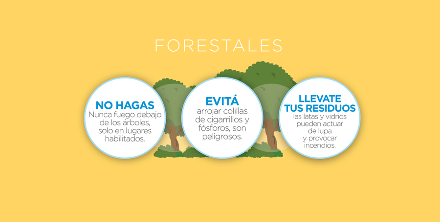

¿Cómo prevenir incendios forestales?
No jugar con fuego, un solo palillo de fósforos es suficiente para incendiar el bosque completo.
Para evitar incendios forestales, es importante que tengas en cuenta estas recomendaciones:
Evita fumar y arrojar fósforos, colillas o botellas rotas en el suelo ya que pueden ser un medio para generar fuego por la intensidad del sol.
No arrojes basura en el campo, especialmente botellas y trozos de vidrio, porque actúan como un incentivo a la producción del fuego.
Si realizás una fogata, colocá piedras alrededor del fuego y, luego de apagarlo con agua o tierra, asegurate de haberlo hecho correctamente removiendo las cenizas.
Evitá encender fuego en época de sequía.
Si estás en una ruta y ves un incendio forestal, avisá de inmediato a los bomberos. Recordá que una columna de humo significa la posibilidad de un incendio forestal.
